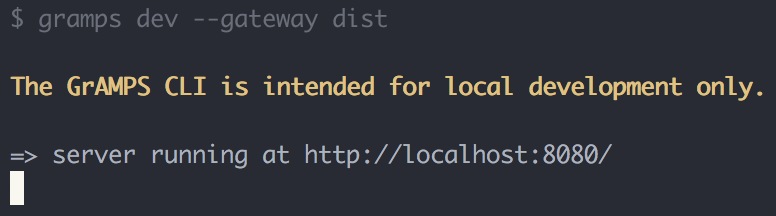
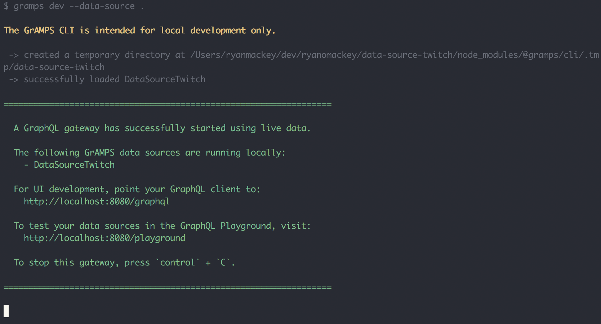

Bringing GraphQL to the Enterprise
When IBM Met Apollo
About me:
- From Fort Collins, Colorado
- Political Science @ CSU
- IBM Cloud in Austin, TX
- ❄️ => 🔥
No overfetching
query {
Users {
id
username
}
}
{
"Users": [
{
"id": 1,
"username": "steve"
},
{
"id": 2,
"username": "steve2"
}
]
}
In-browser IDEs
The entire request cycle is handled for you
const UsersQuery = `query { Users { username } }`;
const UsersList = ({ data: { Users }, loading, error }) => {
if (loading) {
return Loading...
}
if (error) {
return Error!
}
return (
{Users.map(user => - {user.username}
)}
);
}
export default graphql(UsersQuery)(UsersList);
Zero-config Caching
- The query is loaded from the Apollo client-side data store, or the server if the data is not in the store.
- Our component subscribes to the store, so that it is updated if the data changes as the result of a mutation or some other response from the server.
Proof of Concept:
IBM Cloud Account Usage Dashboard
We wanted to start using it in production immediately

Not everyone was on board
Before we get into the details,
let me set the scene…
How IBM Cloud is built:
- Node µ-service architecture
- 30+ µ-service teams
- Each µ-service (“plugin”) is a separate codebase
- Teams control their own workflow
This has its downsides:
- Things can change in 30+ directions at any given time
- Front-ends need data from multiple µ-services
- Internal documentation & architecture is inconsistent
- Code can be wildly inconsistent between µ-services
GraphQL has solutions:
- Changes are centralized in the GraphQL µ-service
- Data access happens through a single endpoint
- Documentation is centralized and consistent
- Cleaner separation between data and presentation
But there are complications:
- Who “owns” the GraphQL µ-service?
- How can teams make independent changes?
- Can one bad commit take down the whole service?
- Doesn’t an extra layer make it harder to trace errors?
We wanted the benefits of GraphQL…
but could we afford the trade-offs?
We needed answers
Can we...
- Centralize data, but let teams keep control?
- Design an approach that improves error handling?
- Make it so easy teams want to switch?
- Build a service that can handle IBM’s scale?
Challenge #1:
Centralize Data, but Decentralize Control
The ideal solution:
Each team maintains their own GraphQL schema...
but that schema is aggregated by a central µ-service.
If this was going to work, we needed a standardized format for sharing schemas.
We call these
Data Sources


Each data source is an independent GitHub repo, which means:
- ✅ No bottlenecks
Each team commits and deploys code independently. - ✅ No loss of control
Each team owns their data source. - ✅ No accidental borking
Each team’s code has individual test suites.
How do we combine the data sources?
GrAMPS
GraphQL Apollo Microservice Pattern Server github.com/gramps-graphql/gramps · npmjs.com/org/gramps


Implementation is easy enough to fit the code on a slide*
*sorry the font is so smallLet’s Upgrade this GraphQL Server
import Express from 'express';
import bodyParser from 'body-parser';
import { graphqlExpress } from 'apollo-server-express';
import mySchema from './schema';
import myDataAccess from './data';
const app = new Express();
app.use(bodyParser.json());
app.use('/graphql',
graphqlExpress({
schema: mySchema,
context: myDataAccess,
}),
);
Step 1: Import the Middleware
import Express from 'express';
import bodyParser from 'body-parser';
import { graphqlExpress } from 'apollo-server-express';
+ import gramps from '@gramps/gramps';
import mySchema from './schema';
import myDataAccess from './data';
+ const GraphQLOptions = gramps();
const app = new Express();
app.use(bodyParser.json());
app.use('/graphql',
graphqlExpress({
schema: mySchema,
context: myDataAccess,
}),
);
Step 2: Import the Data Sources
import Express from 'express';
import bodyParser from 'body-parser';
import { graphqlExpress } from 'apollo-server-express';
import gramps from '@gramps/gramps';
- import mySchema from './schema';
- import myDataAccess from './data';
+ import schemaOne from '@gramps/data-source-one';
+ import schemaTwo from '@gramps/data-source-two';
const GraphQLOptions = gramps();
const app = new Express();
app.use(bodyParser.json());
app.use('/graphql',
graphqlExpress({
schema: mySchema,
context: myDataAccess,
}),
);
Step 3: Combine the Data Sources
import Express from 'express';
import bodyParser from 'body-parser';
import { graphqlExpress } from 'apollo-server-express';
import gramps from '@gramps/gramps';
import schemaOne from '@gramps/data-source-one';
import schemaTwo from '@gramps/data-source-two';
const GraphQLOptions = gramps({
+ dataSources: [schemaOne, schemaTwo],
});
const app = new Express();
app.use(bodyParser.json());
app.use('/graphql',
graphqlExpress({
schema: mySchema,
context: myDataAccess,
}),
);
Step 4: Use the New Schema and Context
import Express from 'express';
import bodyParser from 'body-parser';
import { graphqlExpress } from 'apollo-server-express';
import gramps from '@gramps/gramps';
import schemaOne from '@gramps/data-source-one';
import schemaTwo from '@gramps/data-source-two';
const GraphQLOptions = gramps({
dataSources: [schemaOne, schemaTwo],
});
const app = new Express();
app.use(bodyParser.json());
+ app.use('/graphql', graphqlExpress(GraphQLOptions));
- app.use('/graphql',
- graphqlExpress(req => ({
- schema: req.gramps.schema,
- context: req.gramps.context,
- })),
);
Challenge #2:
Improve Error Handling
What Makes an Error Helpful?
- Clear description of what went wrong
- Clarity about where the error occurred
- GraphQL errors vs. underlying data access issues
- Information to help with tracing bugs
- Unique IDs shared on the client and server side
Client-Side Errors in Development

In production, we can’t show some data
- Docs link may be behind our firewall
- Target endpoint may not be public
Client-Side Errors in Production

docsLink and targetEndpoint are removed in production.
Client and server errors share a GUID
Error: Could not load the given xkcd comic (178460c1-c8d7-42c2-ba0e-f617afb5d3fd)
Description: Could not load the given xkcd comic
Error Code: XKCDModel_Error
GraphQL Model: XKCDModel
Target Endpoint: https://xkcd.com/2000/info.0.json
Documentation: https://ibm.biz/gramps-data-source-tutorial
Data: {
"id": "2000"
}
Using the GUID, we can find the docsLink and
targetEndpoint in the server logs.
This Means...
- Errors are normalized across all data sources
- Support tickets can directly reference details in logs
- Errors are clear and come with documentation
- The source of a given error is immediately clear
Challenge #3:
Make Development So Easy Teams Want to Use It
If we wanted teams to start using GraphQL, we needed it to be dead simple to get started
We created a data source starter kit:
- Strong starting point for new data sources
- Step-by-step tutorial for building a new data source
- Test coverage starts at 💯
- Pre-configured for Travis CI and Code Climate
Now, it's even easier!
# Use npx to run the command without having to install anything globally
npx graphql-cli create -b gramps-graphql/data-source-base data-source-mydata
We built a CLI to make development easier
But there was a snag:
“How do we run a local instance of the GraphQL
µ-service if the data
source we’re developing is already installed? Won’t they collide?”
The solution?
Allow local
data sources
to override
gramps dev --data-source .
Include a disclaimer
Challenge #4:
Build for
Global Scale
We didn’t have to do much
It turns out Apollo’s Express server just works.

Which is pretty great
We started working on the GraphQL µ-service in May
It hit production in July
And we went open source in October
Bonus: Schema Stitching
export default {
linkTypeDefs: `extend type SW_Character { memes: SWM_CharacterMemes }`,
resolvers: mergeInfo => ({
SW_Character: {
memes: {
fragment: `fragment SWMemes on SW_Character { name }`,
resolve: (parent, args, context, info) =>
mergeInfo.delegate(
'query',
'getMemes',
{ name: parent.name },
context,
info,
),
},
},
}),
};
GrAMPS
GraphQL Apollo Microservice Pattern Server github.com/gramps-graphql/gramps · npmjs.com/org/gramps